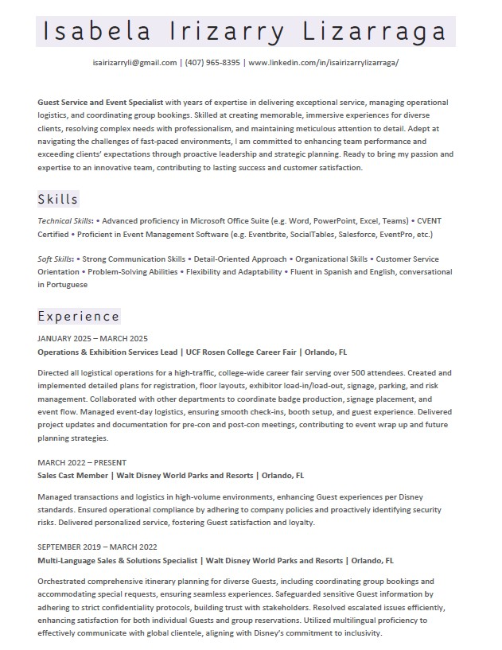

Welcome
Hi! I'm Isa, and this is my professional portfolio. I'm passionate about meaningful event experiences and intentional service. Explore my work, achievements, and more!

Hi! I'm Isa, and this is my professional portfolio. I'm passionate about meaningful event experiences and intentional service. Explore my work, achievements, and more!
I'm Isa, a Dean’s and President’s List student at the University of Central Florida studying Event Management. I’m passionate about creating meaningful, well-organized experiences that make people feel seen and cared for.
With experience at Walt Disney World and UCF’s Rosen College Career Fair, I’ve developed strong skills in communication, operations, and guest services. Outside of events, I love reading, watching movies, running, and rescuing abandoned cats. 🐾

Here’s a snapshot of my experience in event management and guest services. You can also download my full resume below.
 Download Resume

RFP Response – Individual

Career Fair Planning – Team

Before/After Event Table Setup

Event Budget Plan
Thank you so much for taking the time to explore my portfolio. I hope it gave you a glimpse into my passion, personality, and potential.

📧 isairizarryli@gmail.com
📞 (407) 965-8395